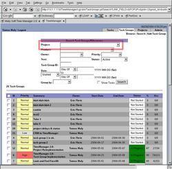
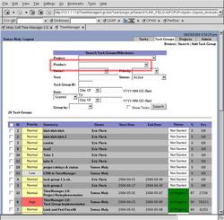
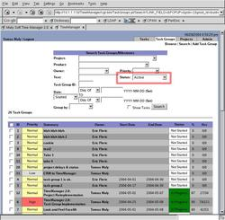
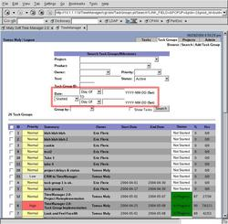
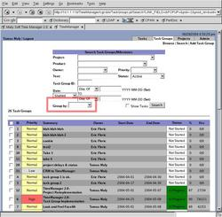
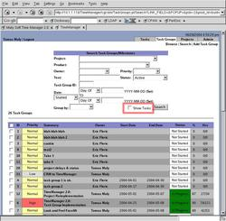
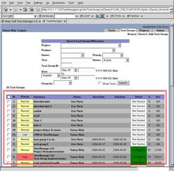

The Task Group/Milestone Search page helps you find the exact task groups that you want. You may also have it display the containing tasks. Leaving any criteria blank means that it doesn't matter.
By clicking on 'Search' once inside the Task Groups Console (by clicking on the 'Task Groups' tab), you open up the search form to provide the criteria to find the task groups you want.
If you want to find the milestones within a project, specify the project from the drop-down menu. If you select 'None', that will restrict results to task groups that do not belong to a project.
A milestone only has a product associated with it if it belongs to a project. You can specify the product with a specific version or just a general product.
The owner specifies who should oversee this task group, ultimately having edit rights. Selecting 'Unassigned' means that it has no owner, where as the blank entry means it doesn't matter.
The 'status' criteria specifies the task group's status. 'Active' means that it is neither canceled nor completed -- it's still being worked on. 'Overdue' means that the due date has already passed (or is today).
The dates specify when the task group was started, due or worked on. If two dates are specified, it is assumed to be between those dates (either the day or week of). If one date is specified it is on the day or week of that date.
The 'Group By' drop-down list specifies how to organize the results for better display. You can choose from owner, product, project, priority, status, due date or due week.
The 'Show Tasks' checkbox specifies that you want to see the containing tasks within those milestones. You are able to click on them to go to the respective tasks.
After clicking on 'Search', the results will show below. You can then click on a task group name or ID to get to each individual one.
